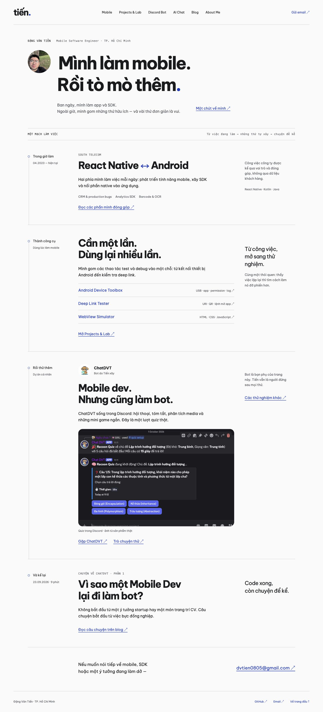
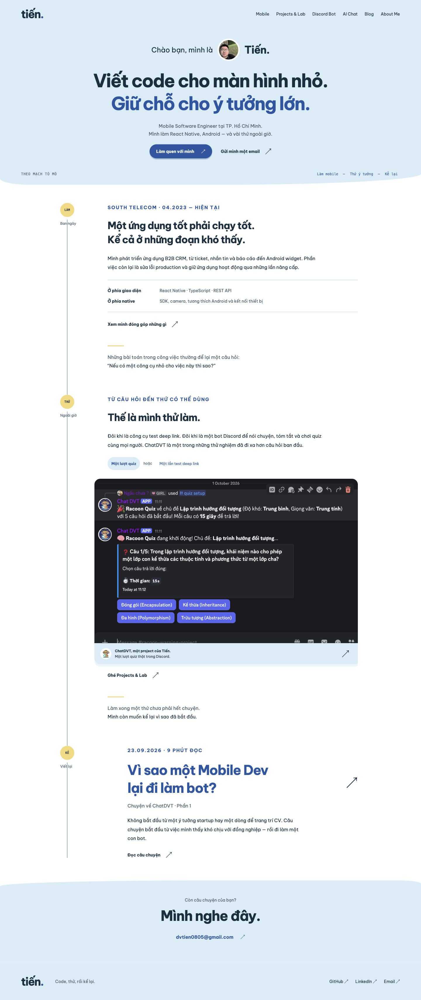
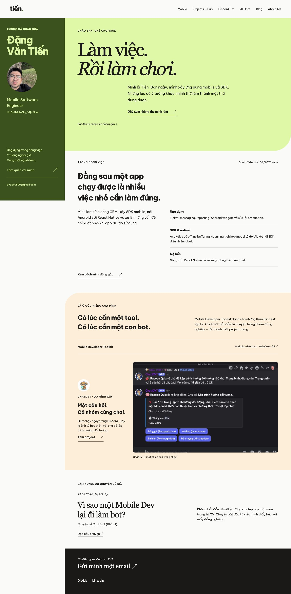

A · DÒNG THÔNG TIN / FUNCTIONAL BRUTALISM
Một mạch làm việc
Thông tin là xương sống: nội dung chạy thành một dòng liên tục, ít khung trang trí, link và danh mục dẫn đường.

Bản mẫu để chọn bố cục, chưa áp dụng vào React. Xem cả phần dưới trang và chuyển qua Me, Playground, Chat để so cách tổ chức nội dung — không chỉ nhìn màu ở đầu trang.
Thông tin là xương sống: nội dung chạy thành một dòng liên tục, ít khung trang trí, link và danh mục dẫn đường.

Mạch kể cá nhân với những ngã rẽ vào công việc, công cụ và người bạn AI; nội dung có nhịp riêng thay vì các ô đều nhau.

Một không gian làm việc có thanh cá nhân xuyên suốt; công việc và sản phẩm được mở ra theo thứ mình làm, không theo template.

Giữ: Tiến là nhân vật chính ở Home/Me, ChatDVT là vai phụ; kinh nghiệm công ty viết ngắn, không tiết lộ nội bộ. Thử: thứ tự đọc, bố cục, cách khám phá dự án và không gian trò chuyện.
Ảnh Discord và Deep Link Tester là ảnh thật. Tin nhắn trong các bản Chat chỉ minh hoạ bố cục, không gọi AI/backend. Mobile, Discord Bot, Blog và link công cụ ngoài bốn màn hình có thể mở preview hiện tại, không có nghĩa là đã được thiết kế lại theo hướng mới.